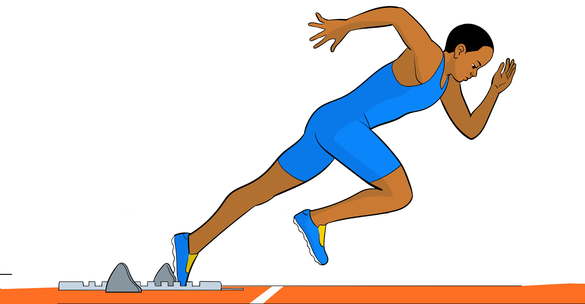

- (iii) Extend the whole body so that there is a straight line through the head, spine and extended rear leg, as shown in Figure 5.4;
- (iv) Take a long and powerful stride out of the blocks;
- (v) Eyes focus on the track about 2 m ahead; and
- (vi) Stay low and drive explosively.

Activity 5.4
Practise proper get-off procedures following “Go” command
Running phase
In the running phase, the sprinter undergoes several stages, namely take-off, acceleration and maximum speed as briefly explained in the following subsections:
Take-off
Take-off is the first stage soon after leaving the block. The following are steps for executing take-off in sprint events:
- (i) Push the thigh of the rear leg forward and upward, as shown in Figure 5.5;
- (ii) Retain the leading leg in horizontal position;